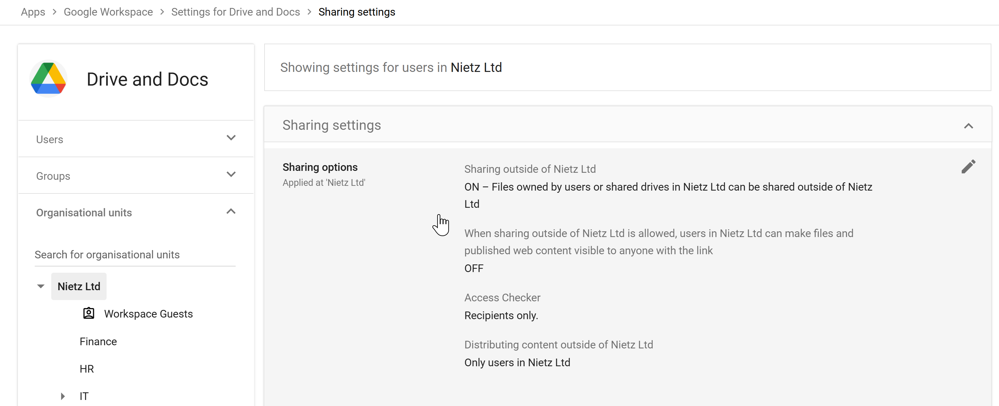
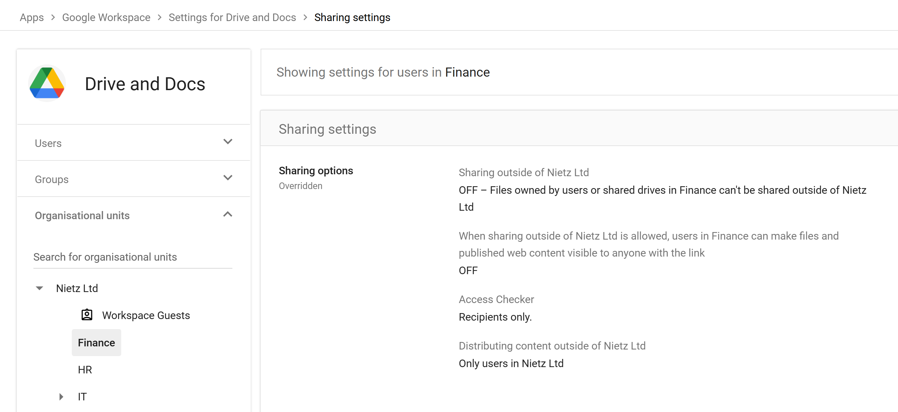
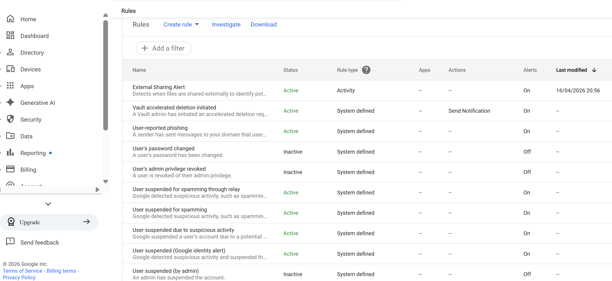
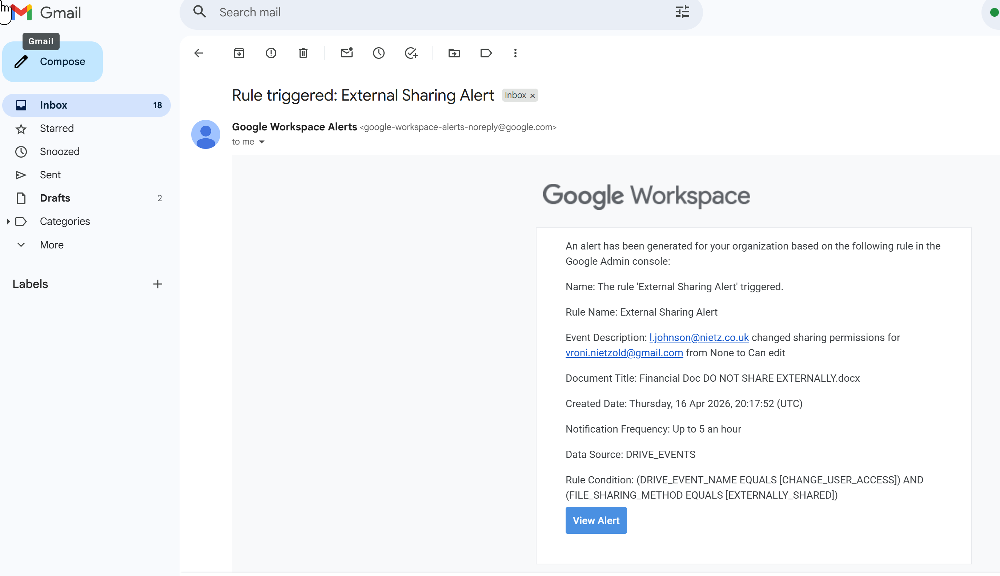

Google Workspace 13: Compliance and Data Protection
Drive sharing controls, alerts and data-protection posture.
13 – Compliance & Data Protection
Overview
Implemented Google Workspace data-protection controls to reduce leakage risk and provide visibility into high-risk user behaviour.
A layered security approach was applied:
- Prevention – Restrict external sharing where appropriate
- Detection – Monitor risky actions using audit logs
- Alerting – Generate real-time notifications for security events
This configuration builds directly on findings from Section 12 (Reporting & Monitoring), where external sharing activity was identified.
Drive Sharing Controls (Organisational Baseline)
Drive sharing settings were reviewed at the root organisational level to establish the default security posture.

Configuration
- External sharing: Enabled
- Link sharing: Restricted (no public link access)
- Access Checker: Recipients only
- External distribution: Controlled
Rationale
- Allows collaboration with external parties where required
- Prevents uncontrolled public link sharing
- Maintains usability for general business operations
Finance OU – Restricted Sharing Policy
Following audit findings, stricter controls were applied to the Finance organisational unit, where sensitive data is handled.

Configuration
- External sharing: Disabled
- Policy: Overridden from parent OU
- Access Checker: Recipients only
Security Impact
- Prevents any files from being shared outside the organisation
- Enforces data containment for sensitive financial information
- Uses OU-based policy segmentation
Detection – External Sharing Activity Rule
An activity-based rule was created to detect external sharing events in real time.

Rule Logic
Trigger when:
- Event: User sharing permissions change
- Condition: Visibility = Shared externally
Purpose
- Detect when users expose files outside the organisation
- Provide visibility into potential data leakage events
Alerting Configuration
The rule was configured to generate alerts and notify key stakeholders.

Configuration
- Alert Centre: Enabled
- Email notifications:
- Super administrators
management@nietz.co.uk
- Severity: High
- Frequency: Up to 5 per hour
Rationale
- Ensures rapid awareness of high-risk actions
- Balances responsiveness with alert fatigue
Rule Activation
The rule was enabled to enforce continuous monitoring.

Result
- Real-time detection of external sharing events
- Automatic alert generation without manual intervention
Alert Validation (Test Scenario)
The configuration was validated by deliberately sharing a file externally.

Outcome
The alert captured:
- User performing the action
- External recipient email
- File name
- Permission change (e.g. Viewer → Editor)
Conclusion
- Detection is functioning correctly
- Alerts provide sufficient context for investigation
- End-to-end monitoring workflow is confirmed
Data Residency (Platform Limitation)
Google Workspace supports Data Regions for controlling where data is stored.
Configuration covered:
- Not available due to Business Standard plan
Production Use
- Enforce EU data residency (GDPR)
- Meet regulatory and organisational requirements
- Control location of sensitive data
Data Retention & eDiscovery (Platform Limitation)
Google Vault provides:
- Retention policies
- Legal holds
- eDiscovery across Workspace services
Configuration covered:
- Not available due to Business Standard plan
Production Use
- Preserve data for legal investigations
- Enforce retention compliance
- Perform forensic data analysis
Security Capabilities Demonstrated
- OU-based policy enforcement
- Controlled external sharing
- Real-time activity monitoring
- Automated alerting for risky behaviour
- End-to-end validation of detection pipeline
Summary
The completed work provides practical Google Workspace data-protection evidence:
- Sensitive departments are restricted from external sharing
- High-risk user actions are continuously monitored
- External data exposure events are detected in real time
- Alerts provide immediate visibility for investigation
Together, these controls reduce the risk of data leakage and establish a strong foundation for organisational security and compliance.